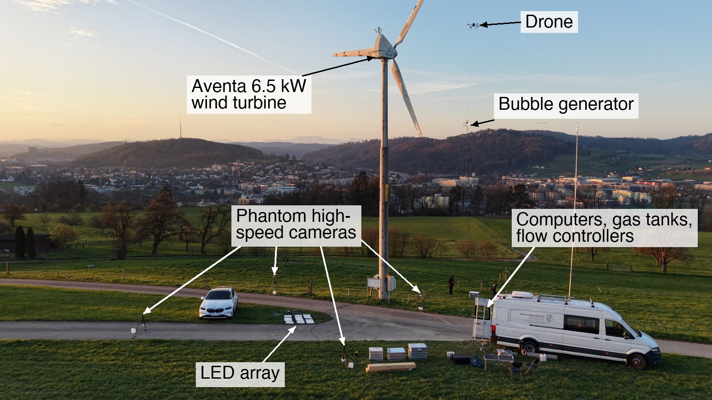

Idea
Tip vortices set both how much power the outer blade produces and how the wake develops downstream. Their behaviour depends on the atmosphere the turbine sits in: its turbulence intensity, shear and length scales. Wind tunnels cannot reproduce the Reynolds numbers and large-scale features of atmospheric turbulence, so most tip vortex studies use laminar or unrealistic turbulent inflow. Commercial field instruments like anemometers and LiDAR lack either the spatial coverage or the temporal resolution to resolve vortex dynamics. Tracking particles directly in the wake of a full-scale turbine fills that gap.
Experimental design
The setup has three parts: seeding, illumination and imaging.
- Seeding. Helium-filled soap bubbles (HFSB) from a custom bubble generator, which I designed and built to be lifted to hub height by a DJI Matrice 350 drone upstream of the rotor.
- Illumination. Sunlight during the day, or a panel of 12 LEDs on the ground shining up into the measurement volume at night. Each bubble shows up as bright glare points that the cameras can track.
- Imaging. Four synchronized Phantom VEO4K-990 cameras recording at 300–930 Hz. Their shared field of view, about 8 × 10 × 6 m, sits 15 m above the ground in the near wake.
Campaign
I led the field campaigns at the OST Aventa 6.5 kW turbine in Winterthur, Switzerland, from test planning through on-site execution: an initial test campaign in October 2025, followed by the main campaign in March 2026. The setup runs by day with sunlight and by night with the LED panel. The work was presented at the Recent Advances in Turbulent Wind Farm Dynamics colloquium in London (2026).

Processing
Each recording is millions of bright dots. Turning them into vortex measurements takes four steps.
Four views
Four synchronized high-speed cameras film the measurement volume from different angles at hundreds of frames per second (300–930 Hz, depending on the recording). Each soap bubble shows up as a pair of bright glare points.
Match & triangulate
Using the camera calibration, the same bubble is matched across all four images. Its four lines of sight cross at a single point, which gives its position in 3D. Repeating this every frame follows the bubble from where it enters the measurement volume, downstream of the rotor, to where it leaves.
Track
Positions are linked from frame to frame into Lagrangian trajectories. Atmospheric turbulence makes every path wander, while bubbles caught by a passing tip vortex loop coherently around its core as they are carried downstream.
Extracting the tip vortex from trajectories
Idealized, the tip vortex is a line carried downstream by the flow, with only a bubble or two caught around it. The two views show the same moment: in 3D the bubbles loop as they are carried along, and seen along the vortex axis, moving with the core, their paths circle it. Fitting a vortex model to these trajectories gives the core position, core radius rc and circulation Γ, and how they change as the vortex breaks down.
Schematic with synthetic particles around an idealized tip vortex, not measured data. Processing uses OpenLPT.
Results
So far, 38,551 bubble trajectories have been reconstructed from 18 recordings of the March 2026 campaign. The next step is to extract the tip vortex from them and follow its core position, size and strength through breakdown under real atmospheric inflow.
In collaboration with Mano Grunwald and Claudia Brunner (MPI-DS).